From Figma sketches to being painted on drag race cars, this logo's gone places.
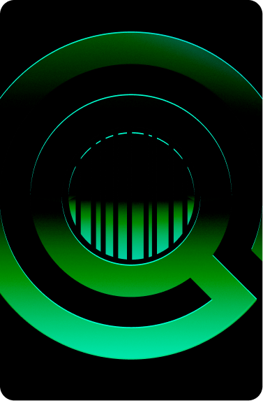
“A logo that reads as global, searchable, and unmistakably ours.”
GlobalSKU is an original Vendidit project that started as one colleague's side effort and grew into a full product. When the company decided to bring it into the brand, it was still running on a placeholder logo — and I was prepping to build the Vendidit website, so it needed an official mark fast.
The design process was a bit of a rollercoaster, and this page walks through every twist and turn — from the first 3D globe render to the glassmorphic revamp it wears today.
Assemble the logo, apply brand gradients, and finalize layouts.
Create the 3D globe wireframe used as the base of the mark.
Image trace the globe render and convert it to vector.
GlobalSKU is an original Vendidit project started by one of my favorite colleagues. He was working diligently on it for months, and eventually the company decided they wanted to integrate it into the brand as one of our products.
The initial concept was a database containing pretty much every item, ever, trackable with a unique identifier known as the “GSKU”. It ended up transforming into Vendidit's answer to automating the creation of item manifests and enriching product listing data with AI.
Since I was prepping to build the Vendidit website, we needed an official logo for GlobalSKU, as it was using a placeholder logo.
GlobalSKU's design process was a bit of a rollercoaster, so I'll outline the process of my thinking.
I began with the “global” part of the name, which made me think of our planet. I envisioned the globe with latitude and longitude lines. To avoid something along the lines of the World Bank logo, I wanted these lines to be accurately portrayed in 3D. To get the 3D right, I created a sphere in Blender, enabled the wireframe, and exported a render:
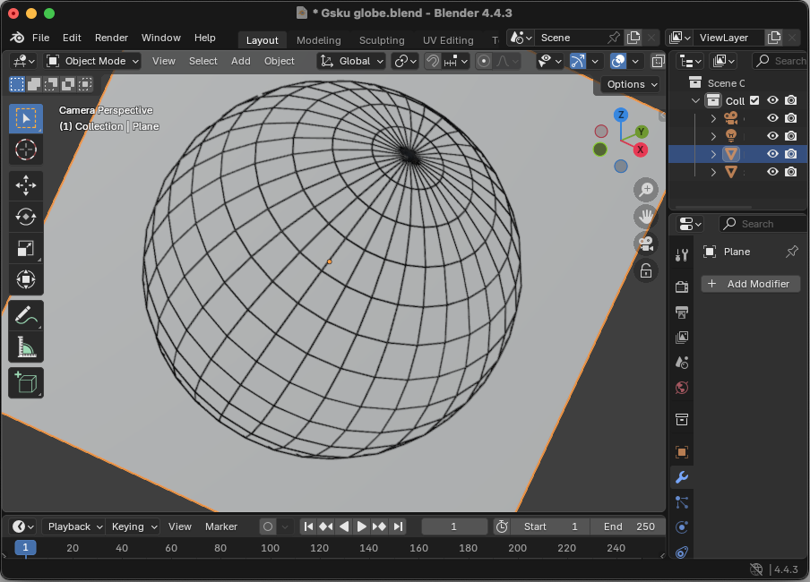
I popped the globe render into Illustrator and image traced it (converting it into a vector) and moved it into Figma. During this process, I decided I wanted a more minimal look anyway, so I removed many of the latitude and longitude lines and went with fills instead of outlines. I was satisfied with how it was coming along.
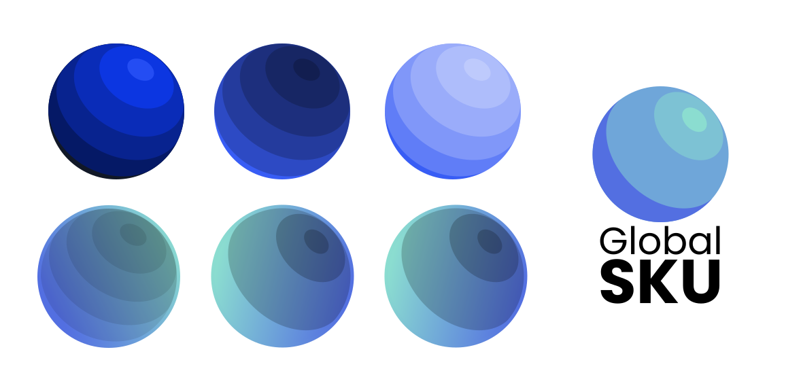
With the “SKU” part of the name, I immediately thought of a magnifying glass since the product involves searching for SKU info. I started with adding a magnifying glass to the globe. It started to feel like a generic global search logo. I was very satisfied with the look of the rightmost version, despite the colors not matching. I kept it as a placeholder.
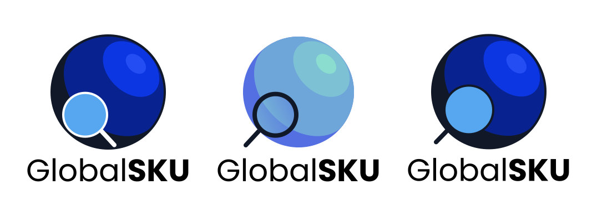
Googling “SKU” yielded a lot of barcode image results (despite barcodes usually correlating with UPC numbers). I ditched the magnifying glass for now and experimented with adding barcodes over the planet. I started to use the subtract boolean operator to experiment with an effect similar to the Nvidia logo.
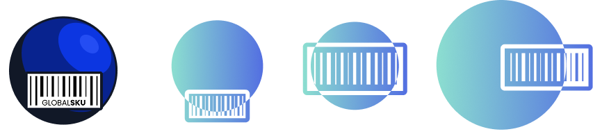
I wasn't very satisfied with the barcode approach. With the barcodes alone, the search element felt missing, so I went back to the magnifying glass. I also began to realize that if the logo was made to be one color, the globe would look like a circle, so I started to move away from the globe lines and applied the Vendidit checkmark gradient to the circle instead.
I started repositioning the magnifying glass around the center and started to like having it in the center. I had the idea to use the subtract effect on the globe and the result started to turn more into a recognizable logo appearance. I was very satisfied with the second to last result. My eureka moment was when it dawned on me that if I removed part of the circle outline near the end of the magnifying glass, the logo began to look like a rotated G. This was the winner.
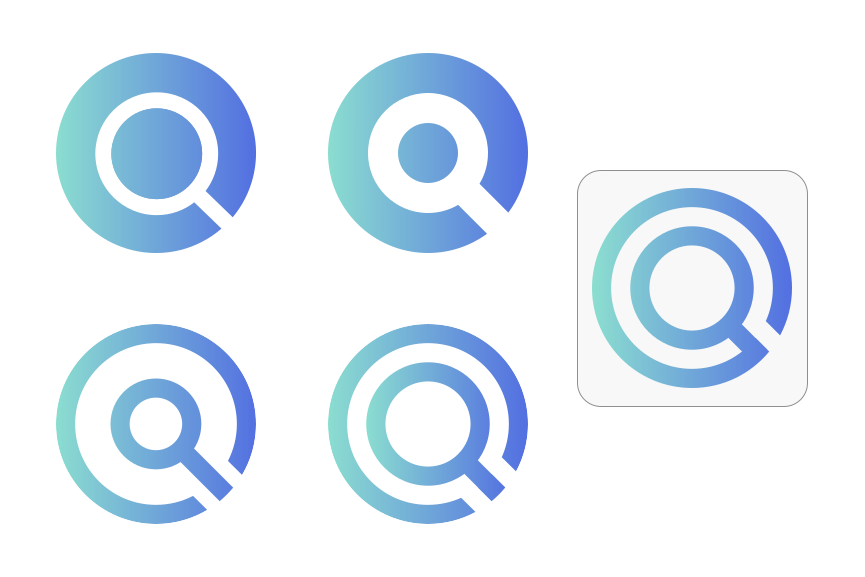
I was satisfied with this direction, but it felt too generic and hollow. Something was needed to tie the whole thing together. I thought about how the magnifying glass represented looking something up. So if we're looking up SKU information, then why not put the SKU element inside the magnifying glass. I combined the barcode concept with the magnifying glass:
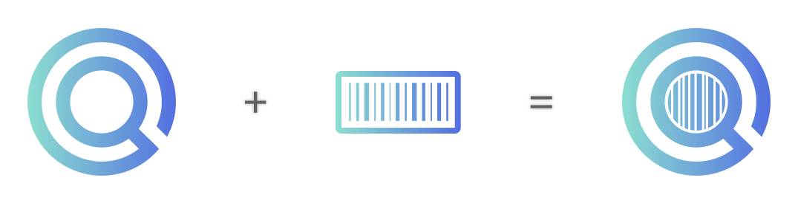
The text was relatively simple. I already had in mind how it was going to look, but I didn't have time to build anything unique font-wise as the deadline was the next day. As plain as it sounds, I thought the logo looked great in Poppins, especially with “SKU” bolded. Some of the concepts were stacked, but I decided to keep it on one line to match the other logos. Like with the Upstream logo, I matched the text color with the Vendidit logo for consistency.
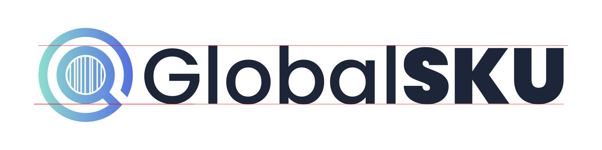
I was extremely satisfied with the result I was able to achieve in such a short time. It correctly aligned with the brand design, yet contained elements that made it unique.
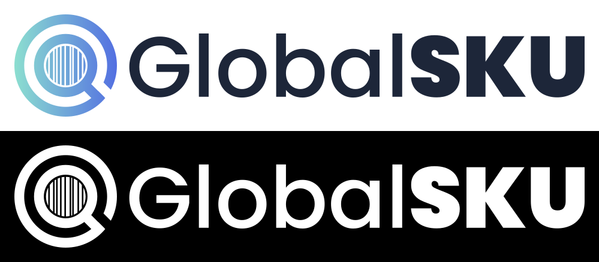
As our products began taking on a more focused direction, it was time to give them an overhaul. The main goal was increasing the logo quality and differentiation through colors.
The two-color pastel scheme needed an update. It made making nice ads difficult, and didn't have enough personality to carry the product forward. Because Vendidit's colors were locked in, and we have two additional products, GlobalSKU and Upstream, I thought, why not take both colors and apply them to each product. Upstream got the blue/indigo, GlobalSKU got the seafoam/cyan.
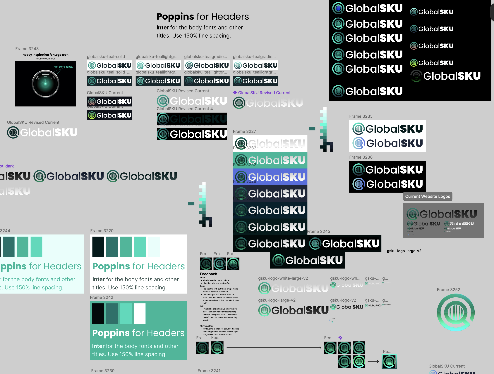
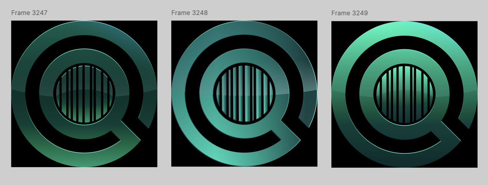
When I was designing the product page, I wanted to try a dark theme. I decided to use the cyan mixed with a navy blue to create this spotlight glow effect.
This use of cyan as energy and technology was a great fit for the product. It had good reception from our product team as well. I decided to explore the right shade and saturation combinations and found a system that works well.
I'm still pretty proud of the logo, but while using it I noticed contrasting issues on various backgrounds. Its two color left to right gradient didn't seem to serve a realistic purpose.
Given several FAANG+ design changes lately, some evidence supports the idea of us having a renaissance of gradients (Google logo), frutiger aero (liquid glass), skeuomorphic kind of designs. I wanted to find something that stood out, so I selected a glassmorphic look that had a nice edge glow and look to it, while still retaining the ability to be one solid color.
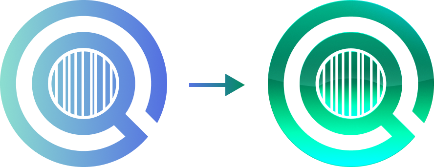
One of the most rewarding moments of this project was seeing the mark at full scale.
Our parent company sponsored sponsored Swedish drag racer Ida Zetterström. Used during multiple races, the paintjob designer took my logo and applied it to his design. A couple of tweaks needed to be made to match the dark and light side of it, along with ensuring the logo remains legible given the intricacies of the barcode.
Seeing the logo run down the strip at over 300 mph — a good stress test for a design meant to stay readable at a glance.
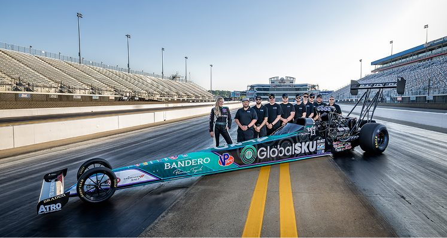
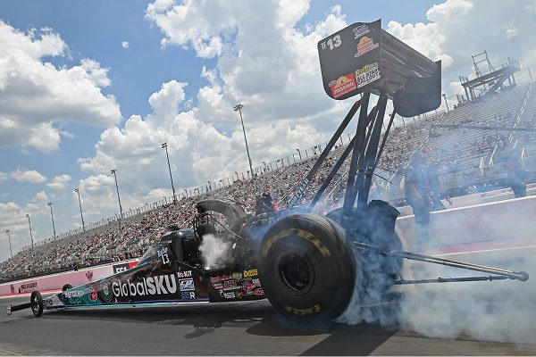
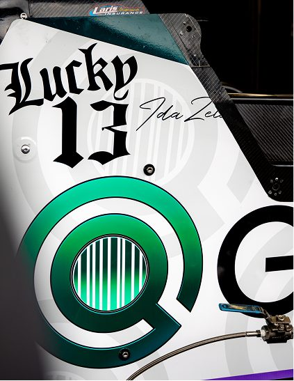
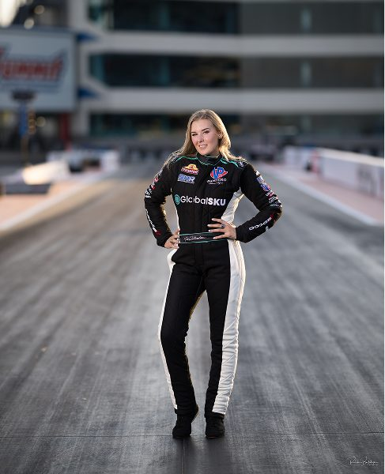
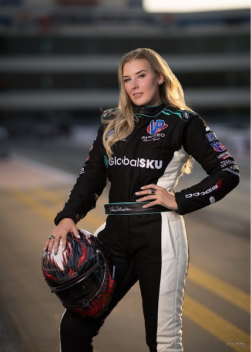
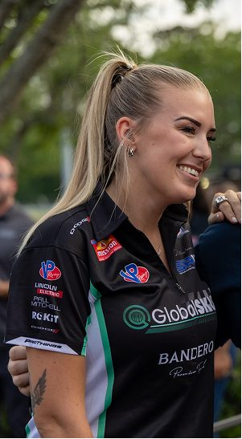
Here's some other projects I've worked on: